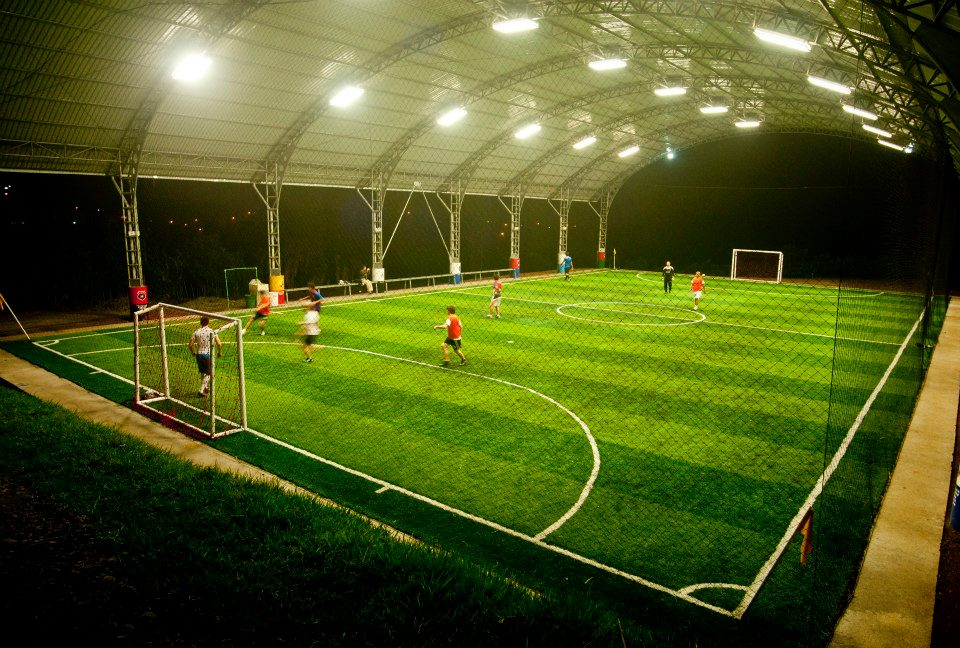

<ion-view view-title="Información">
  <ion-content>
    <div class="list card">
      <div class="item item-avatar">
        
        <h3>Desarrollado por Marco Lozano</h3>
        <p>Octubre 10, 2017</p>
      </div>
      <div class="item item-body">
        
        <p style="text-align:justify">
          Esta es una aplicación desarrollada en Ionic, como proyecto
          final de la materia de Seminarios de Sistemas.
        </p>
        <p style="text-align:justify">
          El objetivo de la aplicación es que se pueda realizar la
          reserva de cualquier cancha de Quito a través de la App.
        </p>
      </div>
    </div>
  </ion-content>
</ion-view>
